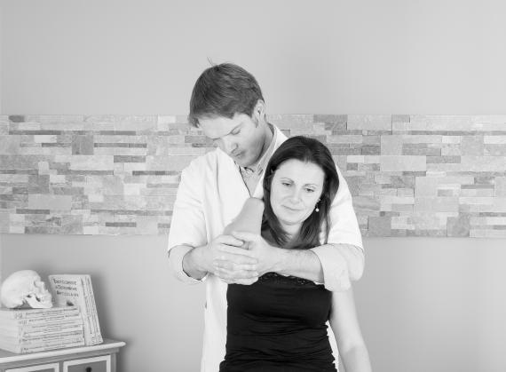
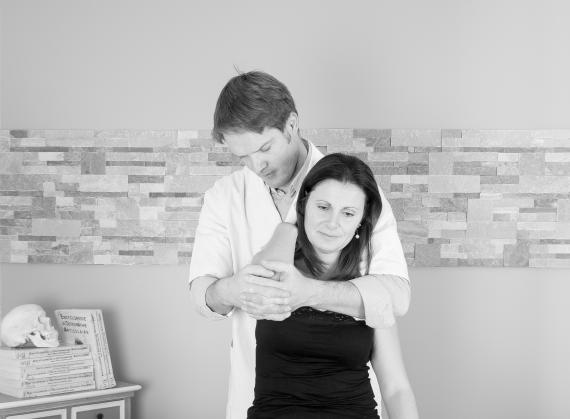

Bonjour et bienvenue !
Je m'appelle Christophe BONNET, je suis Ostéopathe D.O, Masseur-Kinésithérapeute, et diplômé d'un Master en sciences du sport.
J'ai 22 ans d'Expérience en Expertise Biomécanique & Examen clinique.
Vous avez besoin d'aide, et vous en avez assez des douleurs !
Alors prenez rendez-vous ! Sur Hénin-Beaumont ou sur Dourges suivant vos disponibilités. A bientôt ;)
Cabinet en semaine : 288 rue Léon Pruvost, 62110 Hénin-Beaumont
Cabinet le week-end et jours fériés : 44 chemin du Puits, 62119 Dourges
Contact / SMS : 07 69 56 52 71
Tarif : 60€ à 80€ selon le jour de consultation (facture fournie pour remboursement auprès de votre mutuelle)
Prise en charge des douleurs lombaires, dorsales, cervicales, pertes de mobilité, migraines et troubles sportifs.Ma formation
✦ Ostéopathe D.O. — Diplômé de l’Institut Franco-Britannique d'Ostéopathie et de l’Institut Supérieur d'Ostéopathie du Grand Montpellier
✦ Masseur-kinésithérapeute — Université Libre de Bruxelles
✦ Master STAPS — Université Nice Sophia Antipolis
➤ Prise en charge : adultes, enfants, adolescents, nourrissons et sportifs
Le cabinet accueille également des patients venant de Hénin-Beaumont, Lens, Douai, Dourges, Carvin, Noyelles-Godault, Courrières, Libercourt, Arras, Liévin, Lille…